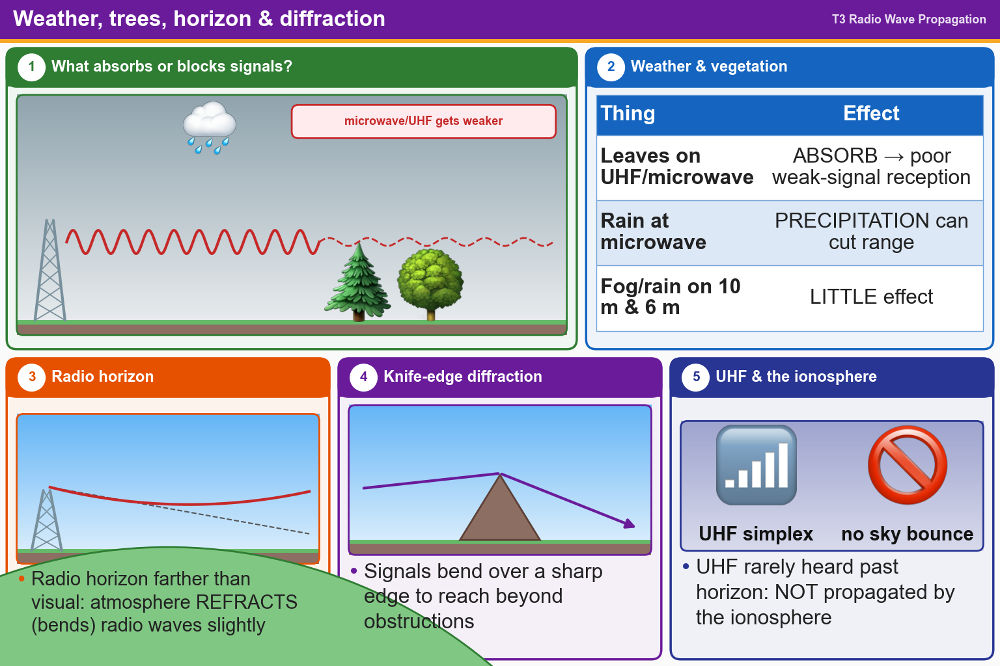

💡 Leaves and rain soak up microwaves. Air bends radio waves past the visible horizon.
Press Check on any question to see if you're right (it won't show the answer), or Grade at the bottom to grade the whole page.
T3A02
How does vegetation affect UHF and microwave signals?
✘A.Amplifies signals, improving reception of weak signals
✘B.Causes knife-edge diffraction, distorting voice peaks
✔C.Absorbs signals, leading to poor reception of weak signals
✘D.Has no effect
T3A07
What weather condition might decrease range at microwave frequencies?
✔A.Precipitation
✘B.Colder temperatures
✘C.Low barometric pressure
✘D.High winds
T3A12
What effect does fog or rain have on 10-meter and 6-meter band signals?
✘A.Deflection
✘B.Absorption
✔C.Little effect
✘D.Increased range
T3C11
Why is the radio horizon for VHF and UHF signals more distant than the visual horizon?
✘A.Radio signals move somewhat faster than the speed of light
✘B.Radio waves are not blocked by dust particles
✔C.The atmosphere refracts radio waves slightly
✘D.Radio waves are blocked by dust particles
T3C05
Which of the following effects may allow radio signals to travel beyond obstructions between the transmitting and receiving stations?
✔A.Knife-edge diffraction
✘B.Quantum tunneling
✘C.Faraday rotation
✘D.Doppler shift
T3C01
Why are simplex UHF signals rarely heard beyond their radio horizon?
✘A.FCC regulations prohibit them from going more than 50 miles
✘B.They are too weak to go very far
✘C.UHF signals are absorbed by the ionospheric D region
✔D.UHF signals are usually not propagated by the ionosphere